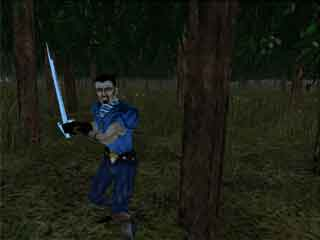
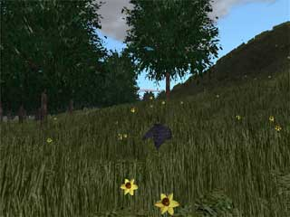
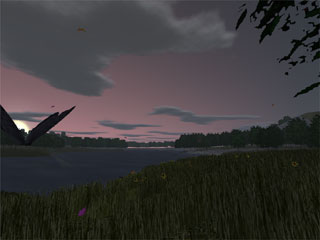
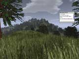
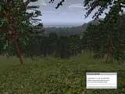
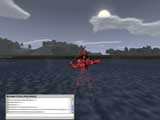
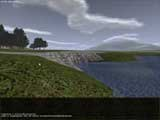
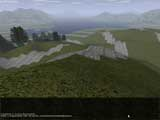
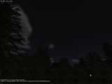

(This page will move to www.wurmonline.com
later on. But don't go there yet.)
|
We need art!
|
Right now we're just a bunch of programmers working on Wurm Online, and none of us
can draw better than this. It's very sad, I know.
We need texture artists, 2d artists (icons for inventory mostly), 3d modelers and 3d
animators. We also need a lead artist to design the overall feeling for the game and
make sure that all the art fits together.
We can't pay you anything right now, but if you're the right guy/gal for the job,
you'll get a nice portion of the revenue sharing program.
So if you're an artistic kind of guy who wants nothing else than to design your own
fantasy world, join
us.
|
|
Play Now!
|
You can try the current version of Wurm Online here if you wish, but there's really
nothing to do yet, as it's still an early alpha version.
If you decide to try it, don't blame us if it doesn't work, or causes your computer
to crash horribly.
It's still an early alpha version.
If the above link doesn't work, make sure you have Java 2, Standard Edition 1.4.2
installed.

|
|
Overview
|
Wurm Online will be a community-centric fantasy MMORPG fully developed in java.
Gameplay will be free at first, but when you wish to develop your character beyond
basic skills, you're going to have to pay a monthly fee.
The world will have a real economy with a fixed pool of money and resources, and
almost all items in the world will be created by other players.
When the game is first launched, it will pretty much just only be a huge forest, and
it will be up to the players to build the towns and create the items needed for both
everyday use and more exotic practices.
Wurm Online will neither have levels nor hitpoints. Instead, you have a set of
skills that define your character, and a list of any unhealed wounds the character
has.
Gameplay is expected to be very down to earth and community-based for most players,
with each town serving as a small community.
Towns will also remain safe as long as the computer controlled guards are alive. You
won't be able to attack other players or perform any other illegal activity inside
the town without first killing all the guards.
Outside the towns, however, you can do anything you want, but performing illegal
activities will lower your status in the nearby villages.
You can see the map for the small test island here. The
starting position is on the peak in the center of the map.
For reference, the size of that island is about 0.4% of the total world size of the
finished game.
|
|
Screenshots
|
Latest screenshot: (halfway through to 0.0.17a)

Models! Skeletal animation! Strange colors!
(The colors are there so people can tell each other apart)
Latest official screenshot(s): (0.0.16a)


New sky, new tile decorations (flowers) and particles (falling leaves and
butterflies)
|
|
Old Screenshots
|

Grass for the tiles closest to the user. This can be configured per tile type in the
engine, so stone slabs have rubble decoration and swamps have mushrooms.


GUI windows, prettier sun and tons of trees!
Note the cool effect called "ugly flat sprite" used on the red warrior avatar.



The hills farthest away are about two kilometers away.
The ground has full texturing (one texture per 4x4 meter tile) for a fourth of that
distance, and a generic texture for the rest.
|
|
Contact
|
Send
us an email if you have any questions or comments, or if you have intrest in
joining the team.
|
|
{kind=link}
{kind=link}
{kind=link}
{kind=link}
{kind=link}
{kind=link}
{kind=link}
{kind=link}
{kind=link}
{kind=link}
{kind=link}